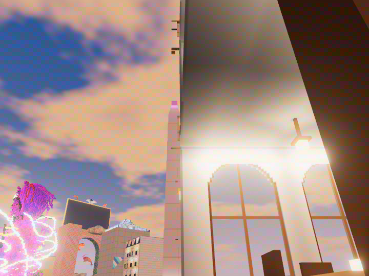
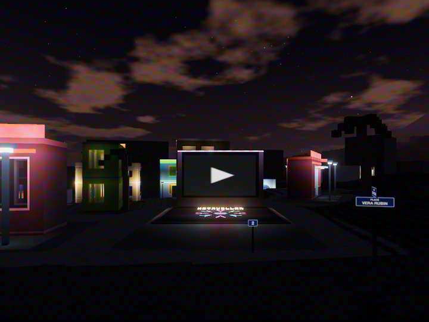
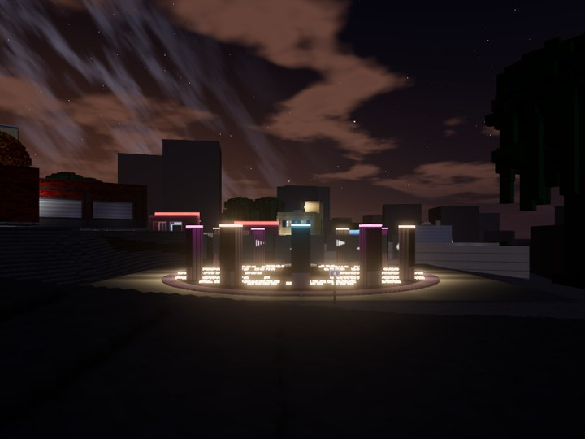
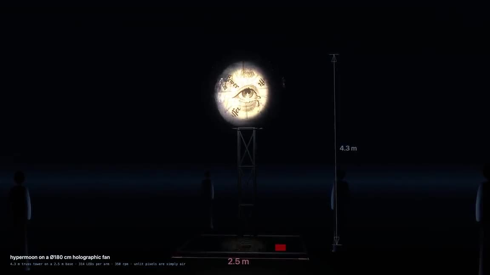
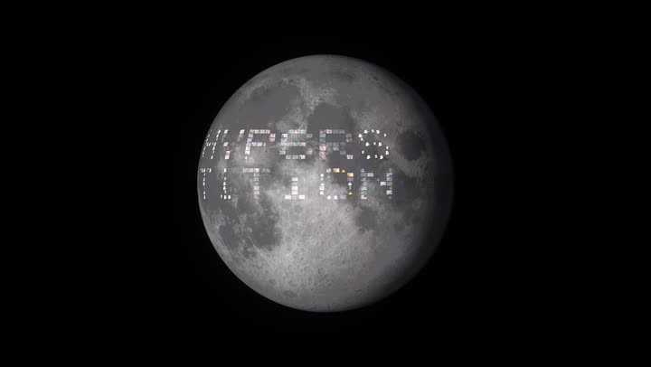
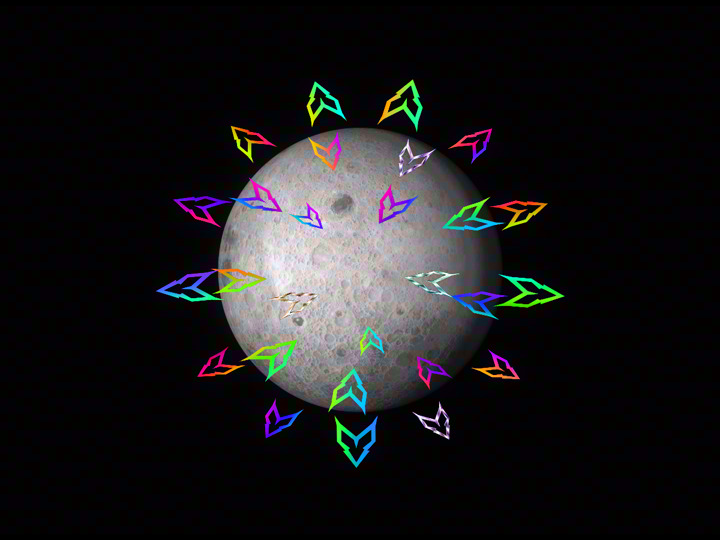
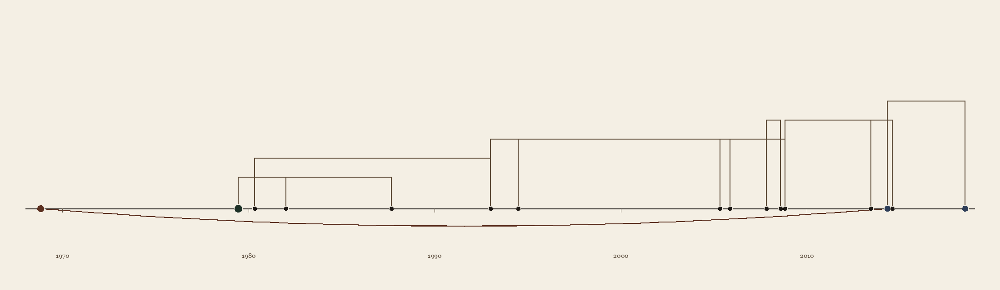
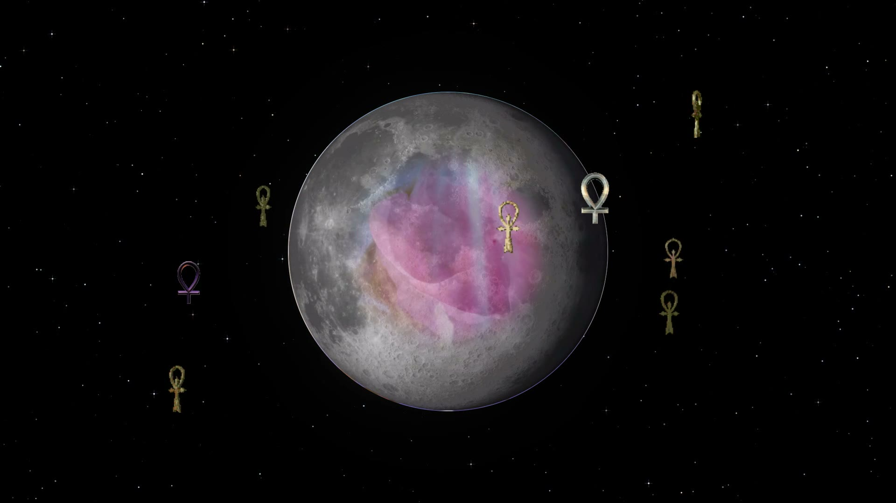
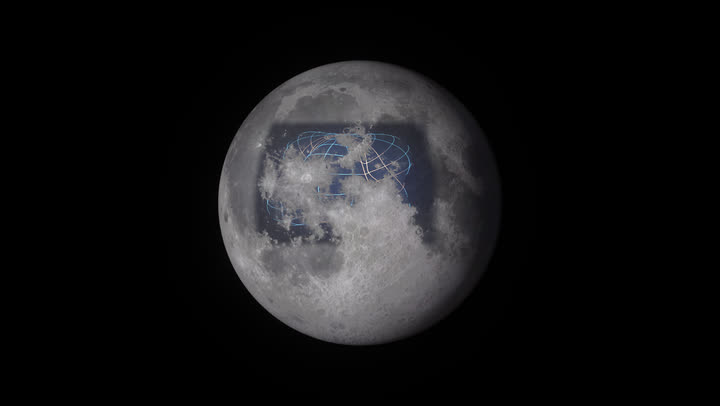
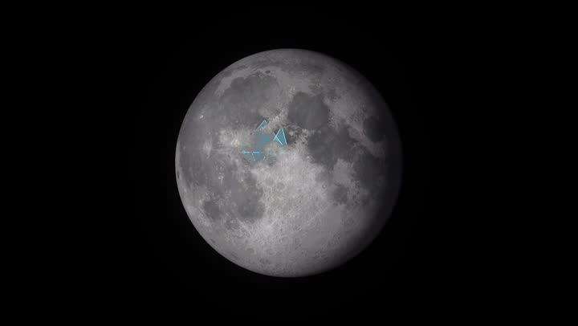

Land and works
Where we have built, and what we have made. Everything here can be visited
in a browser.
Land
Parcels in OgarVerse, a voxel world anyone
can walk in a browser. A link drops you in front of the parcel; WASD to walk, F to fly.
Pictures and screens wake up within 20 m, and screens play when clicked.

The Metavillan obelisk
C-034 · 3, avenue Sophie Scholl — Forum Hannah Arendt
A 51 m stone needle on the ring of the forum where every visitor arrives, the
tallest a parcel may be. Its lantern blinks, magenta and cyan, and the stone is
patterned: three messages in all, for whoever reads them.

The Metavillan flower
P-00004 · 2, place Vera Rubin — Louise Michel
A screen looping one turn of the Metavillan rosette, over a rosette of lamps set in
the floor. The flower's colour carries a message; stand on the rosette, play the
screen and point the reader at it.

Hypersound
P-00006 · 4, place Vera Rubin — Louise Michel
Twelve screens, each a sound piece from the sea and the ground beneath it:
hydrophones, whales, tremors.
Works
The show and the pages around it, all in this repository.

HyperMuse
holographic fan · 4.3 m tower
An audio-reactive holographic fan, where black is transparent and the picture hangs
in the air. Debuted at Burning Man PlayAlchemist in 2023.

The hypermoon
the show · Three.js
The show the fan runs: a moon turning in the dark, and around it whatever the night
asks for, driven by the room's sound.

The Metavillan
an act of the show
Marks orbit the moon, gather into a rosette, bloom and scatter. Every colour the act
shows carries a hidden message, and the reader page finds it with a phone camera.

The Blockchain Chronicles
a book
The book's page, with the lineages drawn behind it, and a camera page that reads
the phrase hidden in the cover's colour.

The Annals of Hermes
11 days on the playa
A day by day account of Hermes on the playa, and the city it was in.

Sonic sphere
a study
The real normal modes of a vibrating sphere, driven by the room.

Synergetics fold
a study · Fuller 100.41
A triangle folding itself into a tetrahedron.